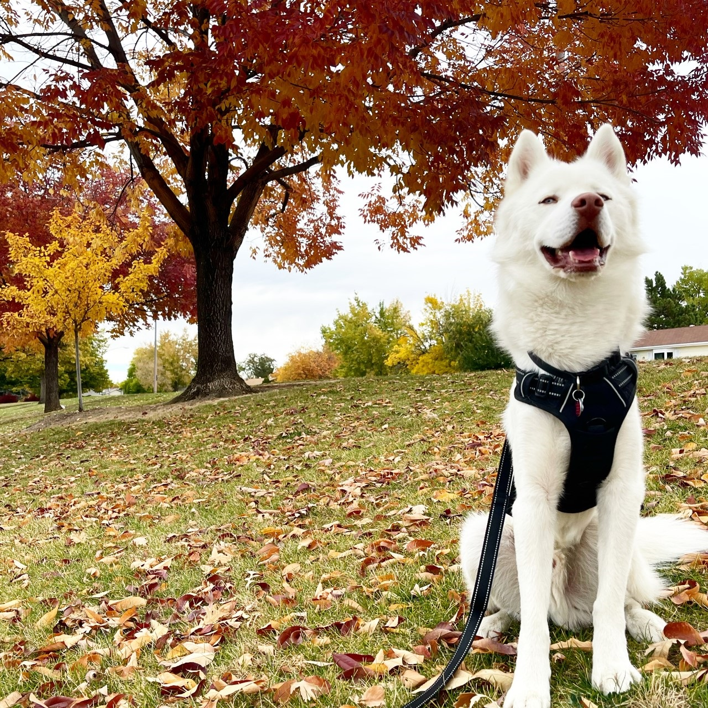

Here are some things that bring me joy, that I would like to share with you!
One of my favorite things is my husky Kenney. His Instagram is operated by myself, with the main goal being to bring joy to anyone who may see it.
Shop the Blog, is a blog that is run by one of my favorite Influencers, Jennifer Todryk or @theramblingredhead. The purpose of her blog is to give easy access to all the things she has purchased and shared on her Instagram account.
The reason I enjoy this blog is due to the fact that it gives me direct links to things she has purchased on various sites such as Amazon or clothing stores. I trust her opinion and enjoy seeing the different things she is sharing.
Half Baked Harvest is my go to website for all things cooking and baking related. I find joy in Teighan Garard’s creative recipes, which have encouraged me to try new things.
Some of my top favorite recipes include: